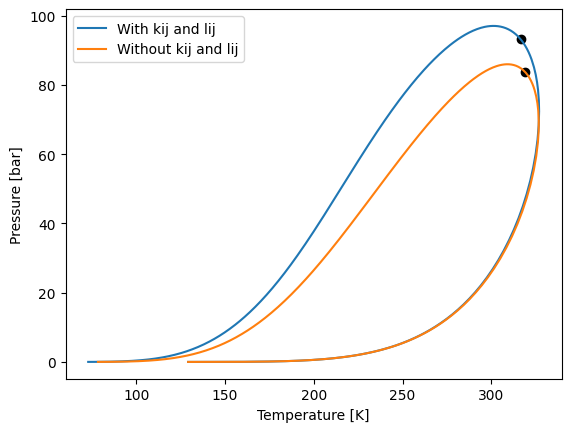
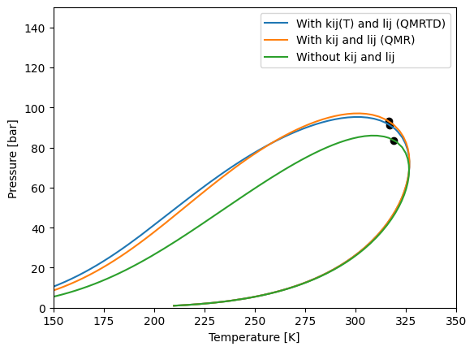
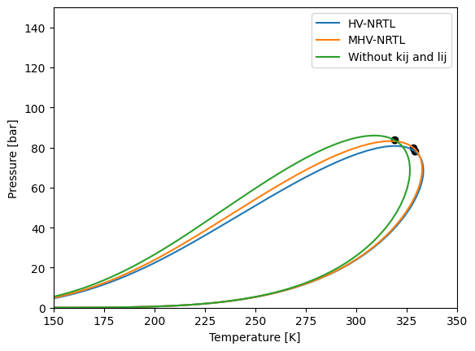
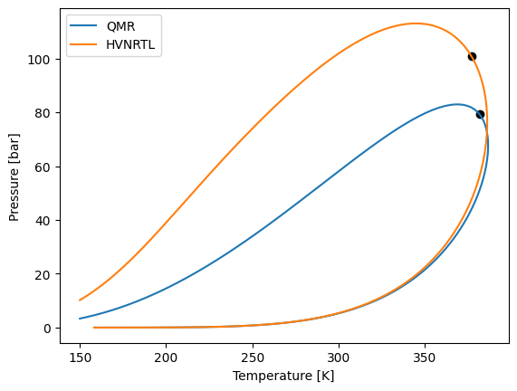
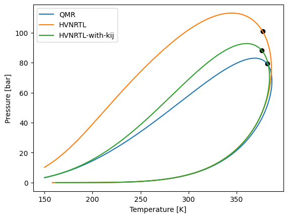
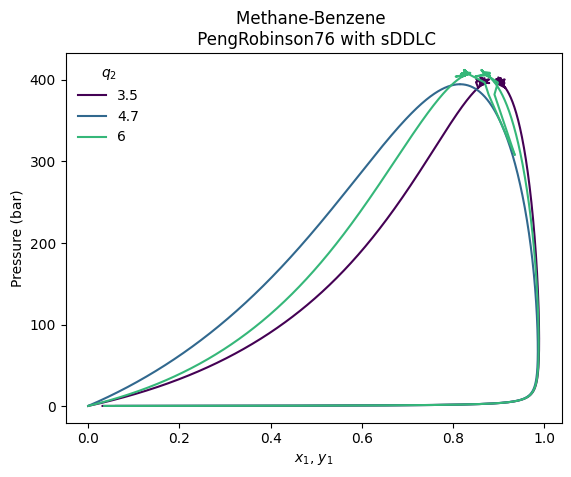
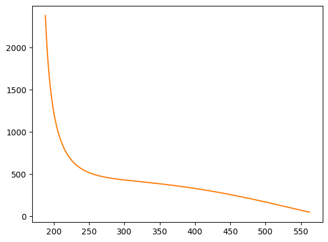
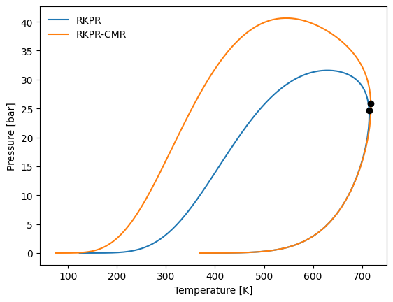

Mixing Rules
There is one more thing to show of the Python API that yaeos supports. At this point of the tutorial we have been using cubic equations of state to perform different calculations. The experience users may have noticed that we never set any interaction parameters for the cubic equations of state.
yaeos support the following mixing rules for cubic equations of state:
QMR: quadratic mixing rule
QMRTD: QMR with temperature dependance of \(k_{ij}\)
MHV: modified Huron-Vidal mixing rule
HV: Huron-Vidal mixing rule
HVNRTL: Huron-Vidal mixing rule coupled with their NRTL model
You can check the available mixing rules by running the following command:
Quadratic mixing rule (QMR)
With:
The QMR is the default mixing rule for almost all cubic equations of state. But it is always set with all the interaction parameters equals to zero by default.
To set the \(k_{ij}\) and \(l_{ij}\) interaction matrix you can do the following:
[14]:
import yaeos
import numpy as np
tcs = np.array([190.6, 369.8]) # critical temperatures [K]
pcs = np.array([45.99, 42.48]) # critical pressures [bar]
w = np.array([0.0115, 0.0866]) # acentric factors [-]
# binary interaction parameters
kij = np.array([[0.0, 0.1], [0.1, 0.0]])
lij = np.array([[0.0, 0.01], [0.01, 0.0]])
# Set QMR
mixing_rule = yaeos.QMR(kij=kij, lij=lij)
# Set a model with the QMR with parameters
model_kij = yaeos.PengRobinson76(
critical_temperatures=tcs,
critical_pressures=pcs,
acentric_factors=w,
mixrule=mixing_rule, # <- here comes the mixing rule
)
# Set model without QMR (QMR with all kij and lij as zero)
model = yaeos.PengRobinson76(tcs, pcs, w)
There we have instantiated a PengRobinson76 with the QMR mixing rule with fantasy interaction parameters. And then we instantiated a PengRobinson76 with no interaction parameters as we have been doing in previous sections.
With the model with interaction parameters we can calculate the same things that we have been calculating at this tutorial. But to show that there is a difference, we can calculate a phase envelope and see what happens.
A liquid-vapor phase envelope (PT) show us all the dew and bubble points of a mixture at fixed composition \(z\). In the section “Phase Equilibrium Calculations” we will learn more about this.
[15]:
import matplotlib.pyplot as plt
# Composition of the mixture
z = np.array([0.5, 0.5])
# Initial guesses for the envelope (not too important right now)
t0 = 150.0
p0 = 0.001
# Envelope with the model with kij and lij
envelope_kij = model_kij.phase_envelope_pt(z, t0=t0, p0=p0, kind="dew")
# Envelope with the model without kij and lij
envelope = model.phase_envelope_pt(z, t0=t0, p0=p0, max_points=1000, kind="dew")
# Plot
envelope_kij.plot(label="With kij and lij")
envelope.plot(label="Without kij and lij")
plt.legend()
plt.xlabel("Temperature [K]")
plt.ylabel("Pressure [bar]");

The QMR mix rule can be used with any cubic equation of state that yaeos supports.
QMRTD: QMR with temperature dependence of \(k_{ij}\)
It is possible also to give some dependence of temperature to the \(k_{ij}\) values, corresponding to the equations:
With:
[16]:
import yaeos
tcs = np.array([190.6, 369.8]) # critical temperatures [K]
pcs = np.array([45.99, 42.48]) # critical pressures [bar]
w = np.array([0.0115, 0.0866]) # acentric factors [-]
# Binary interaction parameters:
## Strong repulsions at low temperatures
kij_0 = [[0.0, 0.23], [0.23, 0.0]]
## "attraction" at high temperatures
kij_inf = [[0.0, -0.01], [-0.01, 0.0]]
Tref = [[0.0, 350], [350, 0.0]]
lij = [[0.0, 0.01], [0.01, 0.0]]
# Quadratic mixing rule instance
mixrule = yaeos.QMRTD(kij_0, kij_inf, Tref, lij)
model_kij_tdep = yaeos.PengRobinson76(
critical_temperatures=tcs,
critical_pressures=pcs,
acentric_factors=w,
mixrule=mixrule, # <- here comes the mixing rule
)
model_kij_tdep.pressure([0.5, 0.5], 2, 200)
[16]:
6.959049536037986
[17]:
z = np.array([0.5, 0.5])
t0 = 150.0
p0 = 1.0
# Envelope with the model with kij and lij
envelope_kij_tdep = model_kij_tdep.phase_envelope_pt(z, kind="dew", t0=t0, p0=p0)
# Plot
envelope_kij_tdep.plot(label="With kij(T) and lij (QMRTD)")
envelope_kij.plot(label="With kij and lij (QMR)")
envelope.plot(label="Without kij and lij")
plt.legend()
plt.xlim(150, 350)
plt.ylim(0, 150)
plt.xlabel("Temperature [K]")
plt.ylabel("Pressure [bar]")
[17]:
Text(0, 0.5, 'Pressure [bar]')

Huron-Vidal mixing rule
The Huron-Vidal mixing rule allows linking a Cubic Equation of State with an Excess Gibbs model, this can be helpful to predict behaviour of systems with high asymmetry in polarity.
[18]:
import yaeos
import numpy as np
tcs = np.array([190.6, 369.8]) # critical temperatures [K]
pcs = np.array([45.99, 42.48]) # critical pressures [bar]
w = np.array([0.0115, 0.0866]) # acentric factors [-]
# binary interaction parameters for NRTL model
aij = np.array([[0.0, -1.2], [0.5, 0.0]])
bij = np.array([[0.0, 100.0], [-100.0, 0.0]])
cij = np.array([[0.0, 0.3], [0.3, 0.0]])
nrtl = yaeos.NRTL(aij, bij, cij)
mixing_rule = yaeos.HV(ge=nrtl)
# Set a model with the MHV with parameters
model_hv_nrtl = yaeos.PengRobinson76(
critical_temperatures=tcs,
critical_pressures=pcs,
acentric_factors=w,
mixrule=mixing_rule,
)
Modified Huron-Vidal mixing rule (MHV)
The other mixing rule that yaeos supports is the MHV mixing rule. To use it we need to instantiate an Excess Gibbs free energy model and pass it to the MHV mixing rule. Any of the supported Excess Gibbs models could be supplied.
[19]:
import yaeos
import numpy as np
# binary interaction parameters for NRTL model
aij = np.array([[0.0, -1.2], [0.5, 0.0]])
bij = np.array([[0.0, 100.0], [-100.0, 0.0]])
cij = np.array([[0.0, 0.3], [0.3, 0.0]])
# Set an NRTl model
nrtl = yaeos.NRTL(aij, bij, cij)
# Mixing rule instance
mixing_rule = yaeos.MHV(ge=nrtl, q=-0.53)
# Set a model with the MHV with parameters
model_mhv_nrtl = yaeos.PengRobinson76(
critical_temperatures=tcs,
critical_pressures=pcs,
acentric_factors=w,
mixrule=mixing_rule, # <- mixing rule
)
Let’s make first an envelope to see the difference and then explain what is happening.
[20]:
import matplotlib.pyplot as plt
z = np.array([0.5, 0.5])
t0 = 150.0
p0 = 1.0
# Envelope with the model with HV and NRTL
envelope_mhv_nrtl = model_mhv_nrtl.phase_envelope_pt(
z, t0=t0, p0=p0, max_points=5000
)
# Envelope with the model with MHV and NRTL
envelope_hv_nrtl = model_hv_nrtl.phase_envelope_pt(
z, t0=t0, p0=p0, max_points=1000
)
# Plot
envelope_hv_nrtl.plot(label="HV-NRTL")
envelope_mhv_nrtl.plot(label="MHV-NRTL")
envelope.plot(label="Without kij and lij")
plt.legend()
plt.xlabel("Temperature [K]")
plt.ylabel("Pressure [bar]")
plt.xlim(150, 350)
plt.ylim(0, 150)
[20]:
(0.0, 150.0)

We have instantiated a NRTL model with some interaction parameters and then instantiated a MHV mixing rule with the NRTL model. The q value of the MHV mixing rule is taken from bibliography. The value to use are:
q = -0.594 for Soave-Redlich-Kwong
q = -0.53 for Peng-Robinson
q = -0.85 for Van der Waals
Huron-Vidal Coupled with NRTL Mixing Rule
Huron and Vidal presented their mixing rule with a modified \(NRTL\) model. This model includes the covolume parameter \(b\) from the cubic EoS. This modification has the characteristic that it can be simplified and use the classic QMR mixing rules for specific binaries in the mixture.
First we will define a model that uses the \(QMR\) mixing rule
[21]:
import yaeos
import numpy as np
# Methane, butane, CO2
Tc = [190.564, 425.12, 304.21]
Pc = [45.99, 37.96, 73.83]
w = [0.0115478, 0.200164, 0.223621]
# binary interaction parameters
kij = np.array(
[[0.0, 0.0, 0.1],
[0.0, 0.0, 0.0],
[0.1, 0.0, 0.0]
])
# Set QMR
mixing_rule = yaeos.QMR(kij=kij, lij=0*kij)
# Set a model with the QMR with parameters
model_kij = yaeos.PengRobinson76(
critical_temperatures=Tc,
critical_pressures=Pc,
acentric_factors=w,
mixrule=mixing_rule, # <- mixing rule
)
Now we will define a model using the \(NRTLHV\) mixing rule
[22]:
alpha = [
[0.0, 0.1, 0.2],
[0.3, 0.0, 0.5],
[0.1, 0.1, 0.0]
]
gji = [
[0.0, 22., 50.],
[20.0, 0.0, 10.],
[0.1, 50.0, 0.0]
]
# Where to use kij values
use_kij = np.full((3, 3), False)
# While we must provide a kij matrix, it will not be used since all the use_kij
# matrix is set to False
mixrule = yaeos.HVNRTL(alpha=alpha, gji=gji, use_kij=use_kij, kij=kij)
model_hvnrtl = yaeos.PengRobinson76(
critical_temperatures=Tc,
critical_pressures=Pc,
acentric_factors=w,
mixrule=mixrule, # <- mixing rule
)
[23]:
z = [0.2, 0.5, 0.3]
model_kij.phase_envelope_pt(z).plot(label="QMR")
model_hvnrtl.phase_envelope_pt(z).plot(label="HVNRTL")
plt.legend()
[23]:
<matplotlib.legend.Legend at 0x7ffa19675a90>

Now let’s modify the use_kij matrix, to use the kij values between methane and butane.
[24]:
use_kij[0, 1] = True
use_kij[1, 0] = True
mixrule = yaeos.HVNRTL(alpha=alpha, gji=gji, use_kij=use_kij, kij=kij)
model_hvnrtl_2 = yaeos.PengRobinson76(
critical_temperatures=Tc,
critical_pressures=Pc,
acentric_factors=w,
mixrule=mixrule,
)
When we plot the phase envelopes we can se how using the \(k_{ij}\) values for methane-butane the phase diagram become more similar to the one with the classic \(QMR\)
[25]:
model_kij.phase_envelope_pt(z).plot(label="QMR")
model_hvnrtl.phase_envelope_pt(z).plot(label="HVNRTL")
model_hvnrtl_2.phase_envelope_pt(z).plot(label="HVNRTL-with-kij")
plt.legend()
plt.show()

segmented Density Dependent Local Composition (sDDLC)
[61]:
import yaeos
import matplotlib.pyplot as plt
import numpy as np
# Methane-Benzene binary system
Tc = [190.564, 562.05]
Pc = [45.99, 48.95]
w = [0.0115478, 0.2103]
zc = [0.286, 0.268]
kij_i = [[0, 0], [0, 0]]
kij_0 = [[0, 0], [0, 0]]
Tref = [[0, Tc[0]], [Tc[0], 0]]
lij = [[0, 0], [0, 0]]
cmap = plt.get_cmap("viridis")
colors = cmap(np.linspace(0, 1, 4))
for i, q2 in enumerate([3.5, 4.7, 6]):
qs = [1.16, q2]
mr = yaeos.sDDLC(qs=qs, kij_0=kij_0, kij_inf=kij_i, t_ref=Tref, lij=lij)
model = yaeos.RKPR(Tc, Pc, w, zc, mixrule=mr)
gpec = yaeos.GPEC(model, x10=1e-6)
gpec.plot_pxy(323, color=colors[i], dx20=1e-9)
plt.plot(np.nan, np.nan, color=colors[i], label=f"{q2}")
plt.legend(frameon=False, title=r"$q_2$")
plt.title("Methane-Benzene \n PengRobinson76 with sDDLC")
[61]:
Text(0.5, 1.0, 'Methane-Benzene \n PengRobinson76 with sDDLC')

[ ]:
%%time
# cl21, cep21 = model.critical_line(z0=[0, 1], zi=[1, 0], stability_analysis=True)
cl12, cep12 = model.critical_line(
z0=[1, 0], zi=[0, 1], s=1e-6, a0=1e-6, ds0=1e-1, stability_analysis=True
)
plt.plot(cl12["T"], cl12["P"])
plt.plot(cl21["T"], cl21["P"])
cl12, cep12
CPU times: user 287 ms, sys: 2.02 ms, total: 289 ms
Wall time: 286 ms
({'a': array([1.00000000e-06, 1.06183656e-06, 1.12749691e-06, 1.23367815e-06,
1.34985897e-06, 1.47134445e-06, 1.56246637e-06, 1.65359508e-06,
1.72194604e-06, 1.77321178e-06, 1.81166250e-06, 1.84050114e-06,
1.88376079e-06, 1.91620636e-06, 1.94054110e-06, 1.95879245e-06,
1.97704408e-06, 1.99529597e-06, 2.01354813e-06, 2.03180055e-06,
2.05005325e-06, 2.07743279e-06, 2.09796785e-06, 2.11865643e-06,
2.14084759e-06, 2.16303916e-06, 2.18523114e-06, 2.20676728e-06,
2.22863530e-06, 2.25086813e-06, 2.27384441e-06, 2.29682118e-06,
2.31906687e-06, 2.34210545e-06, 2.36515805e-06, 2.38867904e-06,
2.41259574e-06, 2.44847162e-06, 2.48434854e-06, 2.52022650e-06,
2.55610547e-06, 2.59198552e-06, 2.61889623e-06, 2.64580753e-06,
2.68617560e-06, 2.72654502e-06, 2.76691577e-06, 2.80728846e-06,
2.86784855e-06, 2.91327098e-06, 2.94733882e-06, 2.98140775e-06,
3.01547747e-06, 3.04542830e-06, 3.07609993e-06, 3.10677233e-06,
3.13769222e-06, 3.16896598e-06, 3.20151877e-06, 3.23439260e-06,
3.26726735e-06, 3.30014299e-06, 3.33301951e-06, 3.36611068e-06,
3.39920271e-06, 3.43274870e-06, 3.46665177e-06, 3.50068156e-06,
3.53656992e-06, 3.57245930e-06, 3.60834973e-06, 3.66218735e-06,
3.71602732e-06, 3.75640888e-06, 3.79679174e-06, 3.83492031e-06,
3.89211543e-06, 3.94931314e-06, 4.00651351e-06, 4.06371648e-06,
4.12092211e-06]),
'T': array([190.56722091, 190.56741999, 190.56763138, 190.5679732 ,
190.56834717, 190.56873818, 190.56903144, 190.5693247 ,
190.56954464, 190.5697096 , 190.56983332, 190.56992611,
190.5700653 , 190.57016968, 190.57024797, 190.57030669,
190.57036541, 190.57042413, 190.57048285, 190.57054157,
190.57060029, 190.57068836, 190.57075442, 190.57082097,
190.57089236, 190.57096374, 190.57103512, 190.5711044 ,
190.57117473, 190.57124625, 190.57132015, 190.57139405,
190.5714656 , 190.57153969, 190.57161384, 190.57168948,
190.5717664 , 190.57188178, 190.57199715, 190.57211253,
190.5722279 , 190.57234328, 190.57242981, 190.57251634,
190.57264614, 190.57277594, 190.57290574, 190.57303554,
190.57323024, 190.57337626, 190.57348578, 190.5735953 ,
190.57370482, 190.57380109, 190.57389968, 190.57399827,
190.57409766, 190.57419817, 190.5743028 , 190.57440846,
190.57451411, 190.57461977, 190.57472542, 190.57483177,
190.57493811, 190.57504591, 190.57515485, 190.5752642 ,
190.57537951, 190.57549483, 190.57561015, 190.57578312,
190.5759561 , 190.57608583, 190.57621556, 190.57633805,
190.57652177, 190.5767055 , 190.57688923, 190.57707296,
190.57725669]),
'P': array([45.99350434, 45.99372097, 45.99395099, 45.99432293, 45.99472989,
45.99515539, 45.99547452, 45.99579366, 45.99603302, 45.99621255,
45.99634719, 45.99644817, 45.99659965, 45.99671326, 45.99679846,
45.99686237, 45.99692628, 45.99699018, 45.99705409, 45.99711799,
45.9971819 , 45.99727776, 45.99734966, 45.99742209, 45.99749978,
45.99757747, 45.99765517, 45.99773056, 45.99780712, 45.99788495,
45.99796539, 45.99804582, 45.9981237 , 45.99820435, 45.99828504,
45.99836738, 45.9984511 , 45.99857668, 45.99870226, 45.99882785,
45.99895343, 45.99907901, 45.9991732 , 45.99926739, 45.99940868,
45.99954997, 45.99969126, 45.99983255, 46.00004448, 46.00020344,
46.00032266, 46.00044187, 46.00056109, 46.0006659 , 46.00077322,
46.00088055, 46.00098874, 46.00109816, 46.00121206, 46.00132708,
46.0014421 , 46.00155712, 46.00167215, 46.00178792, 46.00190369,
46.00202105, 46.00213965, 46.0022587 , 46.00238424, 46.00250979,
46.00263534, 46.00282366, 46.00301198, 46.00315323, 46.00329448,
46.00342784, 46.00362788, 46.00382792, 46.00402796, 46.00422801,
46.00442806]),
'V': array([0.11510108, 0.11510007, 0.11509899, 0.11509724, 0.11509533,
0.11509333, 0.11509184, 0.11509034, 0.11508921, 0.11508837,
0.11508774, 0.11508727, 0.11508655, 0.11508602, 0.11508562,
0.11508532, 0.11508502, 0.11508472, 0.11508442, 0.11508412,
0.11508382, 0.11508337, 0.11508303, 0.11508269, 0.11508233,
0.11508196, 0.1150816 , 0.11508124, 0.11508088, 0.11508052,
0.11508014, 0.11507976, 0.1150794 , 0.11507902, 0.11507864,
0.11507825, 0.11507786, 0.11507727, 0.11507668, 0.11507609,
0.1150755 , 0.11507491, 0.11507447, 0.11507402, 0.11507336,
0.1150727 , 0.11507203, 0.11507137, 0.11507037, 0.11506963,
0.11506907, 0.11506851, 0.11506795, 0.11506745, 0.11506695,
0.11506645, 0.11506594, 0.11506542, 0.11506489, 0.11506435,
0.11506381, 0.11506327, 0.11506273, 0.11506218, 0.11506164,
0.11506109, 0.11506053, 0.11505997, 0.11505938, 0.11505879,
0.1150582 , 0.11505731, 0.11505643, 0.11505576, 0.1150551 ,
0.11505447, 0.11505353, 0.11505259, 0.11505165, 0.11505071,
0.11504977])},
{'x': array([9.99995989e-01, 4.01094560e-06]),
'y': array([0.66468424, 0.33531576]),
'P': 46.00404358980046,
'Vx': 0.1150517954018111,
'Vy': 0.05091781675281902,
'T': 190.5769035926144})

[63]:
gpec.plot_gped()
plt.ylim(0, 500)
gpec._cl12

[56]:
gpec._cep12